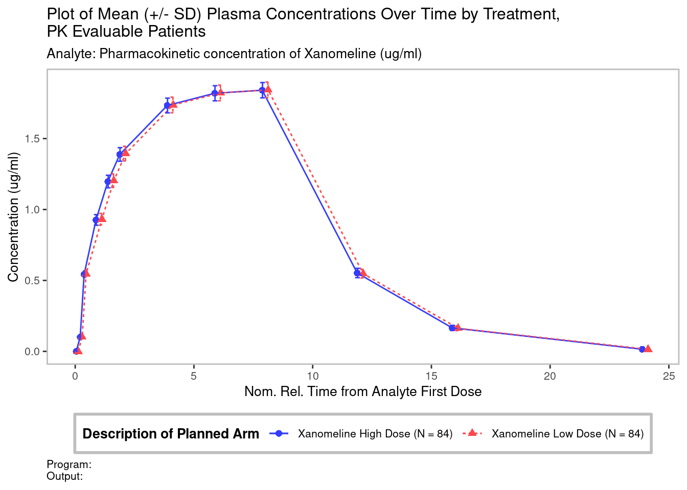

library(pharmaverseadam)
library(tern)
library(dplyr)
library(ggplot2)
library(nestcolor)
library(rlistings)
# Read data from pharmaverseadam
adpc <- pharmaverseadam::adpc
adsl <- pharmaverseadam::adsl
# Use tern::df_explicit_na() to end encode missing values as categorical
adsl <- adsl %>%
df_explicit_na()
adpc <- adpc %>%
df_explicit_na()
# For ADPC keep only concentration records and treated subjects
# Keep only plasma records for this example
# Remove DTYPE = COPY records with ANL02FL == "Y"
adpc <- adpc %>%
filter(PARAMCD != "DOSE" & TRT01A != "Placebo" & PARCAT1 == "PLASMA" & ANL02FL == "Y")Pharmacokinetic
Introduction
This guide will show you how pharmaverse packages, along with some from tidyverse, can be used to create pharmacokinetic (PK) tables, listings and graphs, using the {pharmaverseadam} ADSL and ADPC data as an input.
The packages used with a brief description of their purpose are as follows:
{rtables}: designed to create and display complex tables with R.{tern}: contains analysis functions to create tables and graphs used for clinical trial reporting.{rlistings}: contains framework for creating listings for clinical reporting.
See catalog for PK TLGs here PK TLG catalog
See the {admiral} Guide for creating a PK NCA ADaM for more information about the structure of ADPC. See also ADPC under the ADaM section on the left panel.
Data preprocessing
Here we set up the data for the table, graph and listing. We will read ADPC and ADSL from {pharmaverseadam}. We use tern::df_explicit_na() to set missing values as categorical. In ADPC we will keep only concentration records (dropping dosing records), and for this example we will only keep plasma concentrations (dropping urine). The ADPC data also includes duplicated records for analysis with DYTPE == "COPY" we will drop these as well (These are removed by selecting ANL02FL == "Y").
PK Table
Now we create the PK table.
# Setting up the data for table
adpc_t <- adpc %>%
mutate(
NFRLT = as.factor(NFRLT),
AVALCAT1 = as.factor(AVALCAT1),
NOMTPT = as.factor(paste(NFRLT, "/", PCTPT))
) %>%
select(NOMTPT, ACTARM, VISIT, AVAL, PARAM, AVALCAT1)
adpc_t$NOMTPT <- factor(
adpc_t$NOMTPT,
levels = levels(adpc_t$NOMTPT)[order(as.numeric(gsub(".*?([0-9\\.]+).*", "\\1", levels(adpc_t$NOMTPT))))]
)
# Row structure
lyt_rows <- basic_table() %>%
split_rows_by(
var = "ACTARM",
split_fun = drop_split_levels,
split_label = "Treatment Group",
label_pos = "topleft"
) %>%
add_rowcounts(alt_counts = TRUE) %>%
split_rows_by(
var = "VISIT",
split_fun = drop_split_levels,
split_label = "Visit",
label_pos = "topleft"
) %>%
split_rows_by(
var = "NOMTPT",
split_fun = drop_split_levels,
split_label = "Nominal Time (hr) / Timepoint",
label_pos = "topleft",
child_labels = "hidden"
)
lyt <- lyt_rows %>%
analyze_vars_in_cols(
vars = c("AVAL", "AVALCAT1", rep("AVAL", 8)),
.stats = c("n", "n_blq", "mean", "sd", "cv", "geom_mean", "geom_cv", "median", "min", "max"),
.formats = c(
n = "xx.", n_blq = "xx.", mean = format_sigfig(3), sd = format_sigfig(3), cv = "xx.x", median = format_sigfig(3),
geom_mean = format_sigfig(3), geom_cv = "xx.x", min = format_sigfig(3), max = format_sigfig(3)
),
.labels = c(
n = "n", n_blq = "Number\nof\nLTRs/BLQs", mean = "Mean", sd = "SD", cv = "CV (%) Mean",
geom_mean = "Geometric Mean", geom_cv = "CV % Geometric Mean", median = "Median", min = "Minimum", max = "Maximum"
),
na_str = "NE",
.aligns = "decimal"
)
result <- build_table(lyt, df = adpc_t, alt_counts_df = adsl) %>% prune_table()
# Decorating
main_title(result) <- "Summary of PK Concentrations by Nominal Time and Treatment: PK Evaluable"
subtitles(result) <- c(
"Protocol: xxxxx",
paste("Analyte: ", unique(adpc_t$PARAM)),
paste("Treatment:", unique(adpc_t$ACTARM))
)
main_footer(result) <- "NE: Not Estimable"
resultSummary of PK Concentrations by Nominal Time and Treatment: PK Evaluable
Protocol: xxxxx
Analyte: Pharmacokinetic concentration of Xanomeline
Treatment: Xanomeline High Dose
Treatment: Xanomeline Low Dose
———————————————————————————————————————————————————————————————————————————————————————————————————————————————————————————————————————————————————————
Treatment Group Number
Visit of
Nominal Time (hr) / Timepoint n LTRs/BLQs Mean SD CV (%) Mean Geometric Mean CV % Geometric Mean Median Minimum Maximum
———————————————————————————————————————————————————————————————————————————————————————————————————————————————————————————————————————————————————————
Xanomeline High Dose (N=72)
BASELINE
0 / Pre-dose 72 72 0 0 NE NE NE 0 0 0
0.08 / 5 Min Post-dose 72 0 0.100 0.00489 4.9 0.100 4.9 0.100 0.0912 0.112
0.5 / 30 Min Post-dose 72 0 0.544 0.0241 4.4 0.543 4.4 0.543 0.499 0.603
1 / 1h Post-dose 72 0 0.927 0.0370 4.0 0.926 4.0 0.926 0.859 1.02
1.5 / 1.5h Post-dose 72 0 1.20 0.0438 3.7 1.20 3.6 1.20 1.12 1.31
2 / 2h Post-dose 72 0 1.39 0.0474 3.4 1.39 3.4 1.38 1.31 1.50
4 / 4h Post-dose 72 0 1.73 0.0521 3.0 1.73 3.0 1.73 1.65 1.84
6 / 6h Post-dose 72 0 1.82 0.0538 3.0 1.82 3.0 1.82 1.74 1.92
8 / 8h Post-dose 72 0 1.84 0.0545 3.0 1.84 3.0 1.84 1.76 1.94
12 / 12h Post-dose 72 0 0.551 0.0341 6.2 0.550 6.2 0.554 0.486 0.619
16 / 16h Post-dose 72 0 0.165 0.0181 11.0 0.164 11.1 0.165 0.134 0.198
24 / 24h Post-dose 72 0 0.0149 0.00311 20.9 0.0145 21.5 0.0146 0.0100 0.0203
36 / 36h Post-dose 0 72 NE NE NE NE NE NE NE NE
48 / 48h Post-dose 0 72 NE NE NE NE NE NE NE NE
Xanomeline Low Dose (N=96)
BASELINE
0 / Pre-dose 96 96 0 0 NE NE NE 0 0 0
0.08 / 5 Min Post-dose 96 0 0.101 0.00531 5.3 0.101 5.3 0.100 0.0906 0.111
0.5 / 30 Min Post-dose 96 0 0.546 0.0263 4.8 0.545 4.8 0.544 0.495 0.597
1 / 1h Post-dose 96 0 0.931 0.0406 4.4 0.930 4.4 0.927 0.852 1.01
1.5 / 1.5h Post-dose 96 0 1.20 0.0481 4.0 1.20 4.0 1.20 1.11 1.29
2 / 2h Post-dose 96 0 1.39 0.0518 3.7 1.39 3.7 1.39 1.29 1.49
4 / 4h Post-dose 96 0 1.74 0.0547 3.2 1.74 3.2 1.74 1.64 1.83
6 / 6h Post-dose 96 0 1.82 0.0548 3.0 1.82 3.0 1.82 1.73 1.91
8 / 8h Post-dose 96 0 1.84 0.0548 3.0 1.84 3.0 1.84 1.75 1.94
12 / 12h Post-dose 96 0 0.549 0.0297 5.4 0.548 5.4 0.548 0.489 0.620
16 / 16h Post-dose 96 0 0.163 0.0163 10.0 0.163 10.0 0.161 0.135 0.200
24 / 24h Post-dose 96 0 0.0146 0.00288 19.7 0.0143 19.8 0.0142 0.0102 0.0207
36 / 36h Post-dose 0 96 NE NE NE NE NE NE NE NE
48 / 48h Post-dose 0 96 NE NE NE NE NE NE NE NE
———————————————————————————————————————————————————————————————————————————————————————————————————————————————————————————————————————————————————————
NE: Not EstimablePK Graph
Now we create the PK graph.
# Keep only treated subjects for graph
adsl_f <- adsl %>%
filter(SAFFL == "Y" & TRT01A != "Placebo")
# Set titles and footnotes
use_title <- "Plot of Mean (+/- SD) Plasma Concentrations Over Time by Treatment, \nPK Evaluable Patients"
use_subtitle <- "Analyte:"
use_footnote <- "Program: \nOutput:"
result <- g_lineplot(
df = adpc,
variables = control_lineplot_vars(
x = "NFRLT",
y = "AVAL",
group_var = "ARM",
paramcd = "PARAM",
y_unit = "AVALU",
subject_var = "USUBJID"
),
alt_counts_df = adsl_f,
position = ggplot2::position_dodge2(width = 0.5),
y_lab = "Concentration",
y_lab_add_paramcd = FALSE,
y_lab_add_unit = TRUE,
interval = "mean_sdi",
whiskers = c("mean_sdi_lwr", "mean_sdi_upr"),
title = use_title,
subtitle = use_subtitle,
caption = use_footnote,
ggtheme = theme_nest()
)
plot <- result + theme(plot.caption = element_text(hjust = 0))
plot
PK Listing
Now we create an example PK listing.
# Get value of Analyte
analyte <- unique(adpc$PARAM)
# Select columns for listing
out <- adpc %>%
select(ARM, USUBJID, VISIT, NFRLT, AFRLT, AVALCAT1)
# Add descriptive labels
var_labels(out) <- c(
ARM = "Treatment Group",
USUBJID = "Subject ID",
VISIT = "Visit",
NFRLT = paste0("Nominal\nSampling\nTime (", adpc$RRLTU[1], ")"),
AFRLT = paste0("Actual Time\nFrom First\nDose (", adpc$RRLTU[1], ")"),
AVALCAT1 = paste0("Concentration\n(", adpc$AVALU[1], ")")
)
# Create listing
lsting <- as_listing(
out,
key_cols = c("ARM", "USUBJID", "VISIT"),
disp_cols = names(out),
default_formatting = list(
all = fmt_config(align = "left"),
numeric = fmt_config(
format = "xx.xx",
na_str = " ",
align = "right"
)
),
main_title = paste(
"Listing of",
analyte,
"Concentration by Treatment Group, Subject and Nominal Time, PK Population\nProtocol: xxnnnnn"
),
subtitles = paste("Analyte:", analyte)
)
head(lsting, 28)Listing of Pharmacokinetic concentration of Xanomeline Concentration by Treatment Group, Subject and Nominal Time, PK Population
Protocol: xxnnnnn
Analyte: Pharmacokinetic concentration of Xanomeline
——————————————————————————————————————————————————————————————————————————————————————
Nominal Actual Time
Sampling From First Concentration
Treatment Group Subject ID Visit Time (h) Dose (h) (ug/ml)
——————————————————————————————————————————————————————————————————————————————————————
Xanomeline High Dose 01-701-1028 BASELINE 0.00 -0.50 <BLQ
0.08 0.08 0.102
0.50 0.50 0.547
1.00 1.00 0.925
1.50 1.50 1.19
2.00 2.00 1.37
4.00 4.00 1.68
6.00 6.00 1.76
8.00 8.00 1.77
12.00 12.00 0.495
16.00 16.00 0.138
24.00 24.00 0.0107
36.00 36.00 <BLQ
48.00 48.00 <BLQ
01-701-1034 BASELINE 0.00 -0.50 <BLQ
0.08 0.08 0.105
0.50 0.50 0.569
1.00 1.00 0.967
1.50 1.50 1.25
2.00 2.00 1.44
4.00 4.00 1.79
6.00 6.00 1.88
8.00 8.00 1.9
12.00 12.00 0.556
16.00 16.00 0.162
24.00 24.00 0.0138
36.00 36.00 <BLQ
48.00 48.00 <BLQ